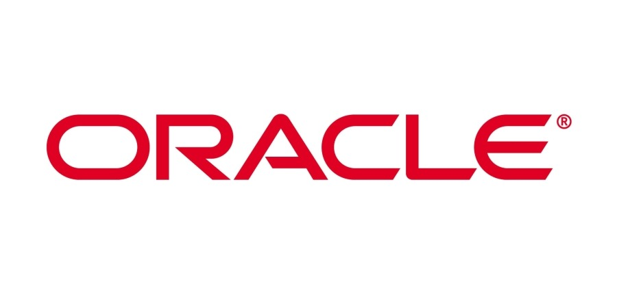
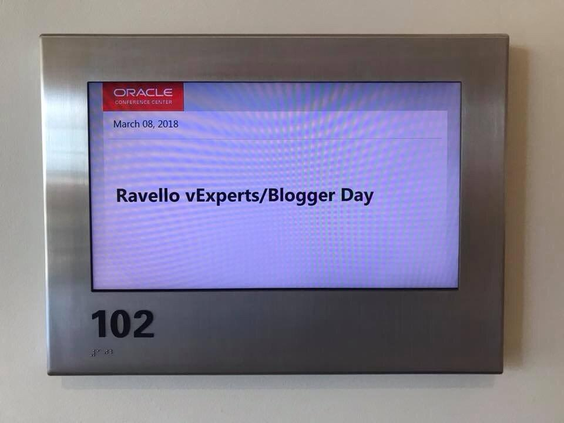
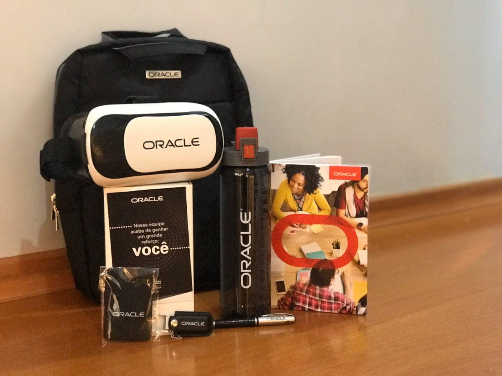
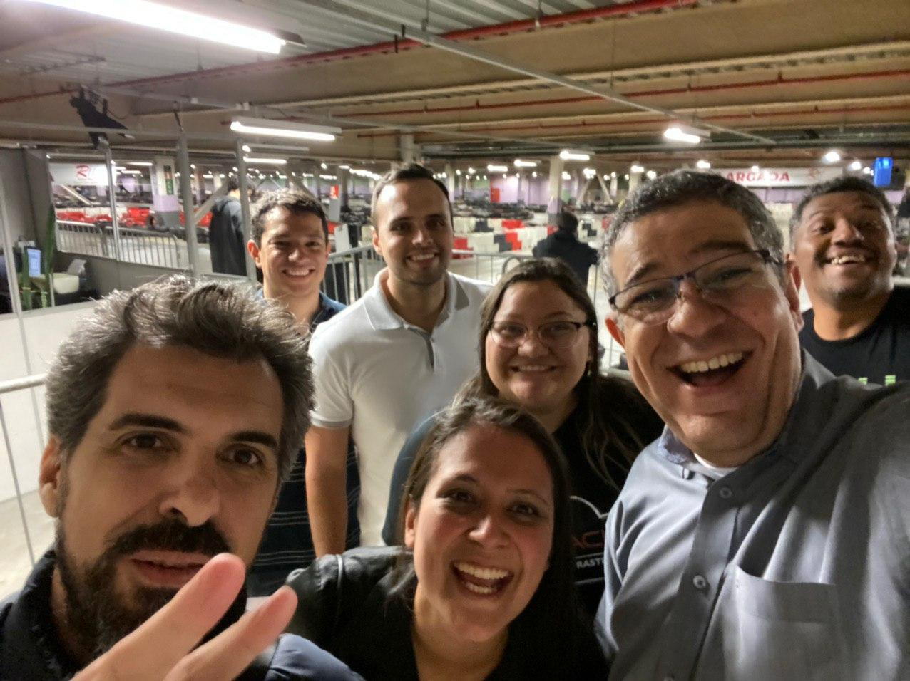

Um novo começo!
Blog OracleCompartilhe esse post nas redes sociais...
Olá Homelabers!
English readers please click here
Esse é um post muito especial para mim. Hoje, dia 12/03/2020 é o dia de um novo começo na minha carreira.
Se você acompanha esse blog há algum tempo, já deve ter reparado que mudei de empresa e cargos algumas vezes nesses 5 longos anos e hoje enquanto você estiver lendo esse post, estarei fazendo o processo de on-boarding em uma empresa que respeito bastante e nunca havia sonhado em trabalhar um dia.
Estou super feliz em compartilhar com vocês que sou o mais novo Senior Sales Consultant na Oracle.

Tudo começou há um tempo atrás…
🎵 Tudo começou
Há um tempo atrás…
Minha jornada até aqui foi bastante longa e começou mais precisamente há dois anos atrás, quando fui convidado pelo meu querido amigo John Troyer para participar do Oracle Ravello Blogger Day em Redwood (a sede da Oracle nos EUA). Foi uma experiência incrível e que me levou a conhecer o Welington, aqui no Brasil.

Fast forward, no final do ano passado, o WP me chamou para um almoço na Oracle e me fez a proposta. Foram alguns meses de espera namoro, negociações e processos burocráticos, mas no último dia 19/02 recebi a tão aguardada Offer Letter. Dai para frente foi uma correria para juntar toda a documentação, formulários, exames e mais processos, mas no final, tudo deu certo!
Até agora a experiência tem sido sensacional! Estou escrevendo esse post no dia 10/03 e agora pouco chegou pelo correio um pacote com o Welcome Kit da Oracle.
 Esse óculos VR permite você assistir um filme em VR no Youtube para conhecer os escritórios da Oracle Brasil
Desafios
Trabalhar na Oracle é um sonho de muitos, mas que poucos conseguem. É uma empresa GIGANTE e muito conhecida no mercado. Como um amigo me falou outro dia, eu estou de volta a Série A!
Um dos meus principais desafios será “aprender a ser um SE”. Sempre trabalhei com Infra, conheço relativamente bem esse assunto, mas por poucas vezes em minha carreira estive do outro lado do balcão. Sempre fui FREGUÊS e contratei serviços e isso vai me ajudar estando do outro lado, eu sei quando um cliente não está sendo bem atendido ou quando não está gostando do serviço ou produto oferecido.
Outra coisa legal e que me atraiu foi o desafio de trabalhar com Cloud full time. A Cloud da Oracle ainda é um produto/serviço relativamente novo no mercado, mas que está ganhando a cada dia mais e mais tração e conquistando muitos clientes. A empresa está colocando muitas fichas ($$$) no desenvolvimento e aperfeiçoamento da tecnologia e a briga promete ser boa!
Eu testei o OCI recentemente e como disse nesse post, o produto está muito maduro e vem sofrendo constantes atualizações e melhorias. Se eu não acreditasse no produto e na empresa, eu não embarcaria nesse desafio.
Conversei com MUITA gente antes de bater o martelo, nunca fui um cara de vendas, mas consegui entender que a função de um SE (Sales Engineer ou Pré-Vendas) é suportar a venda, mostrar ao cliente ou ao futuro cliente como o seu produto ou serviço vai ajudá-lo a resolver um problema de negócio. E isso eu sempre fiz, mas internamente.
Estou lendo vários livros e blogs sobre o assunto e me preparando ao máximo para o desafio. Será um grande aprendizado e um salto na minha carreira.
O futuro do blog Homelaber
O blog continua. Como falei no outro post, o conteúdo aqui vai mudar um pouco e vou tentar trazer o máximo de informações sobre OCI para vocês.
Existe pouco conteúdo em Português e como eu vou ter que estudar MUITO sobre o produto, quero compartilhar meus estudos com vocês.
Agradecimentos
Quero aproveitar esse post, para agradecer várias pessoas as quais eu devo muito. Muito obrigado pelos conselhos, conversas e incentivos.
- John Troyer - que me convidou para o Ravello Blogger Day e me apresentou as pessoas da Oracle.
- Weligton Pinto - pelo convite e confiança
- Josiel, Ferrari, Leo, Patara, Paladino, Sega, Glauber, Gouveia, Felipe, Guilhermo, Keith, Tim, Ariel, Wesley, Samuel, Ricardo - pelas longas conversas e conselhos
- Nane, Mari e João - minha amada família, por me darem todo o suporte em casa e aguentarem as barras junto comigo!
- Ao meu novo time, pela recepção calorosa no kart =)
É isso galera! Vida nova, novos desafios e um monte de trabalho a frente! Aguardem as cenas dos próximos capítulos!
 Meu novo time durante uma corrida de kart na semana passada - o braço doi até hoje!
E aproveitando, se vocês quiserem me encontrar no Telegram e conversar sobre Oracle OCI, venha participar do Grupo Oracle Cloud Brasil no Telegram
A new beginning!
Hello my English readers!
I’m happy to announce that Today (03/12/2020) I am joining Oracle as a Senior Sales Consultant to work in the Oracle Cloud division here in São Paulo, Brazil.
Long story short, it all started two years ago when John Troyer (@jtroyer) invited me to Redwood City to attend the Oracle Ravello Blogger Day (and I can’t thank him enought for that). There I met some people from Oracle, who put me in contact with the Oracle Cloud director here in São Paulo and we started talking about OCI, recording podcasts for vBrownBag, VMUG sessions, etc.
Fast forwarding to last November, I got a call from this guy inviting me to join his team. After a few months of interviews, phone calls and lots of paperwork and approvals, here I am!
It will be a big challenge, but I am very excited about it and about all the new things I will have to learn and discovery.
So, thanks to everyone who supported me and don’t worry, I will continue to be part of the #vCommunity.
This is my welcome kit! Realy nice hum?
Val
PS - If you want to read the whole post in English, click here for the translated version (google translated)
Compartilhe esse post nas redes sociais...
Valdecir Carvalho
Nerd e pai orgulhoso da Mariana e João. Profissional Sênior de TI com foco em arquitetura de infraestrutura e cloud computing. Blogueiro, podcaster, palestrante, amante de comunidades técnicas, fotógrafo aposentado e adora jogos antigos.
#vExpert · #VMUGLeader · #VUGBrasil · #vBronwBagBrasil · #VeeamVanguard